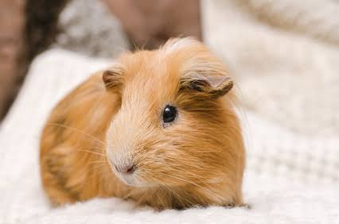
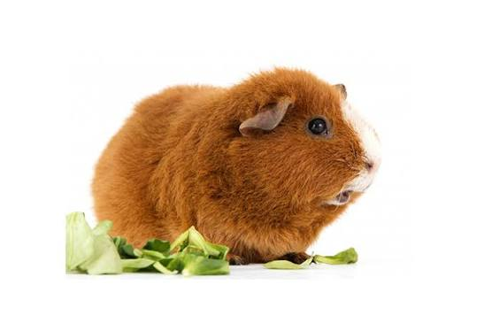
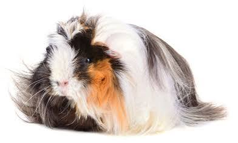

Morče je hlodavec, který se stal oblíbeným domácím mazlíčkem. Je známé svou přátelskou povahou a snadnou péčí. Morčata jsou společenská zvířata, která vyžadují interakci s lidmi nebo jinými morčaty. Jsou také známá svým charakteristickým zvukem, který vydávají při komunikaci.
Morče je malé a milé zvíře, které se snadno učí a rádo se hraje.